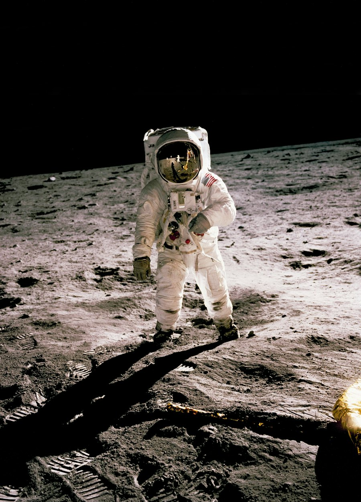
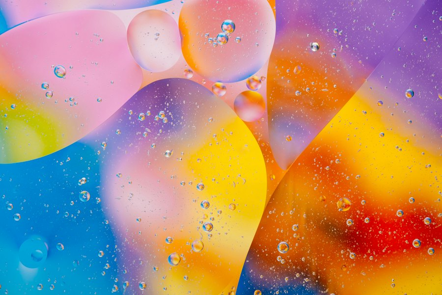

01:28Comunidade
Vídeos, opiniões e histórias sobre o que você ama assistir.
Em destaque

03:05Da comunidade
M
Marina
há 2 h
Que final! A fotografia de Duna é simplesmente absurda. Denis Villeneuve constrói um mundo que parece vivo. Já quero rever no cinema!
Duna
2021 · Ficção científica
R
Rafael
há 5 h
Essa sequência de Oppenheimer é cinema puro. A trilha, a tensão e aquilo tudo na tela... arrepiou!
Oppenheimer
2023 · Drama
B
Beatriz
há 1 d
Ainda pensando nessa cena. Que roteiro, que atuações! Tudo em Todo Lugar ao Mesmo Tempo é uma experiência única.
Tudo em Todo Lugar ao Mesmo...
2022 · Ação
M
Marina
há 3 h
Villeneuve comentou que ainda existe um pedaço de Arrakis para explorar. A comunidade já está especulando o próximo filme.
Duna
2021 · Ficção científica
R
Rafael
há 8 h
Nolan soltou um recado curto sobre filmes em película. O post rendeu discussão a noite inteira.
Oppenheimer
2023 · Drama
B
Beatriz
há 1 d
A HBO confirmou novos episódios e os criadores já estão escolhendo a trilha da próxima temporada.
The Last of Us
2023 · Drama